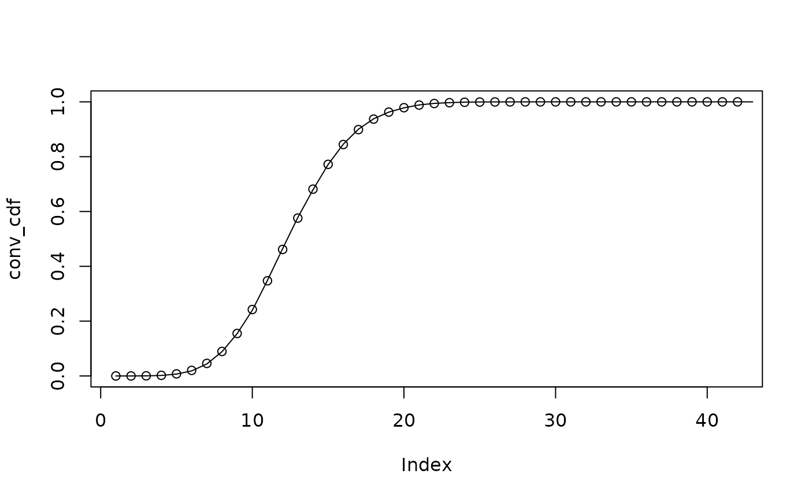

This function allows the addition of probability mass functions (PMFs) to produce a new PMF. This is useful for example in the context of reporting delays where the PMF of the sum of two Poisson distributions is the convolution of the PMFs.
add_pmfs(pmfs)A list of vectors describing the probability mass functions to
A vector describing the probability mass function of the sum of the
Helper functions for model modules
add_max_observed_delay(),
convolution_matrix(),
enw_reference_by_report(),
enw_reps_with_complete_refs(),
extract_obs_metadata(),
extract_sparse_matrix(),
latest_obs_as_matrix(),
simulate_double_censored_pmf()
# Sample and analytical PMFs for two Poisson distributions
x <- rpois(10000, 5)
xpmf <- dpois(0:20, 5)
y <- rpois(10000, 7)
ypmf <- dpois(0:20, 7)
# Add sampled Poisson distributions up to get combined distribution
z <- x + y
# Analytical convolution of PMFs
conv_pmf <- add_pmfs(list(xpmf, ypmf))
conv_cdf <- cumsum(conv_pmf)
# Empirical convolution of PMFs
cdf <- ecdf(z)(0:42)
# Compare sampled and analytical CDFs
plot(conv_cdf)
lines(cdf, col = "black")
